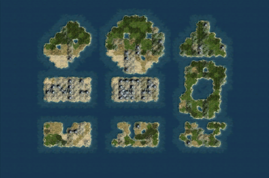
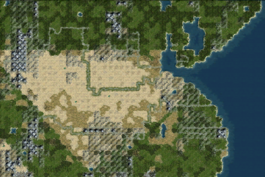
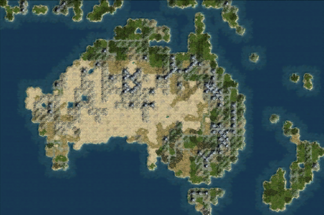
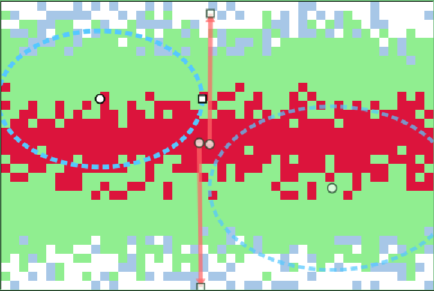
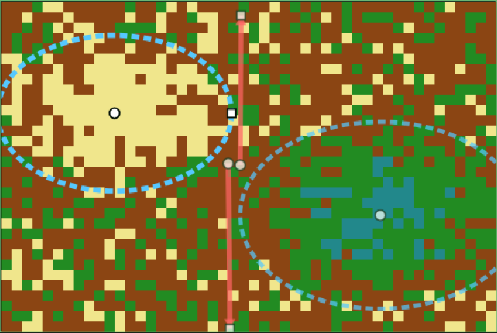
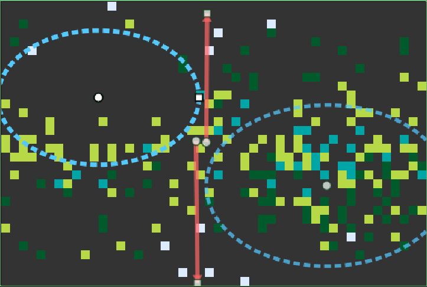
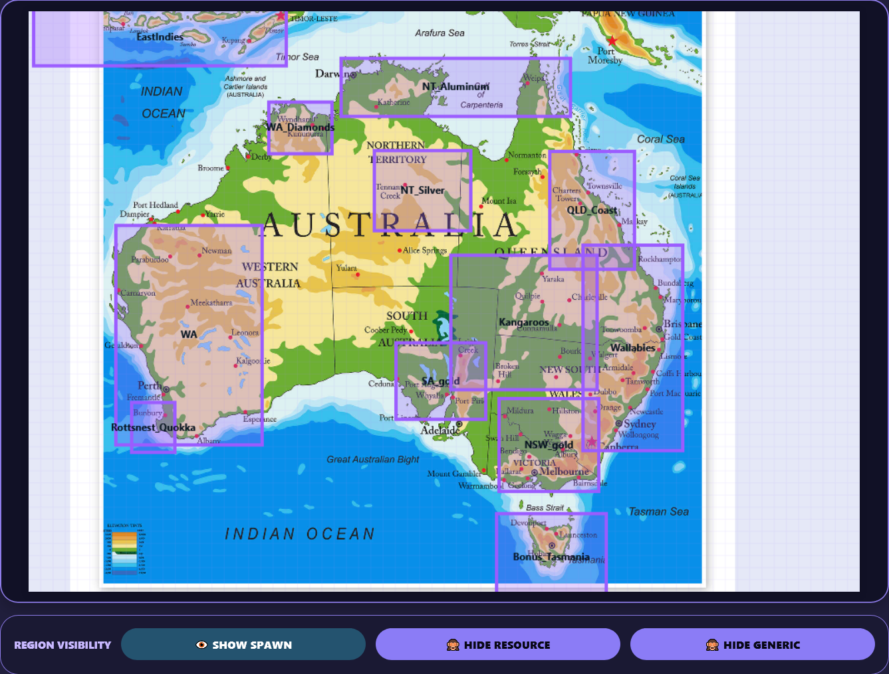

Browser-based editing toolkit for for Civilization IV mapscripts.
This toolkit contains the GeometricMultiFractal.py mapscript (used as a base map) and 4 webapps to support mapscript generation.
The mapscript uses a custom fractal plot generator based on the MultiFractal class used in several vanilla CivIV mapscripts. This generator allows one to generate maps with very specific geographies. Included are several other features: climate-based terrain / feature generator, custom river mapper, fixed starting locations, bonus additions to specific areas of the map.
Download GeometricMultiFractal.py from the latest release:
Place GeometricMultiFractal.py in your Civilization IV PublicMaps folder.
C:\Program Files\Firaxis Games\Civilization 4\Beyond the Sword\PublicMaps
C:\Program Files (x86)\Steam\steamapps\common\Sid Meier's Civilization IV Beyond the Sword\Beyond the Sword\PublicMaps
Duplicate Geometric_MultiFractal.py and rename it.
Open index.html (this page) to launch the toolkit menu.
The webapps can be opened directly from the repository, through GitHub Pages, or offline from a downloaded copy of the repo.
Each webapp generates a list or data block. Copy the generated output into the matching function inside Geometric_MultiFractal.py.
The mapscript comes with 3 example maps, available under the Geographic Accuracy option.



Open GMF_Plot. Load a background image as needed.
Add fractal regions to the canvas from the right panel. Supported shapes include rectangles, ellipses, and triangles.
Scatter > Balance > Gather.Click Generate in Export Region List and paste the output into:
def generatePlotTypes():
Open GMF_Climate.
Add linear or radial climate drivers. Switch canvas modes through the buttons in Display / Target.
Click Generate in Export Climate Drivers and paste the output into:
def setup_profile(self):



Open GMF_Rivers.
Add rivers and waterways. A waterway is a 1-tile-wide path of water. Click on the canvas to add points.
When a river is complete, click Deselect or press Esc.
Click Generate in Export For addRivers and paste the output into:
def addRivers():
Open GMF_MiscRegions.
Add regions for player spawn locations and extra bonus additions.
civ_mapping
def _assign_all_starting_plots():
Paste spawn output into:
def _assign_all_starting_plots():
Paste bonus output into:
def addCustomResources():
